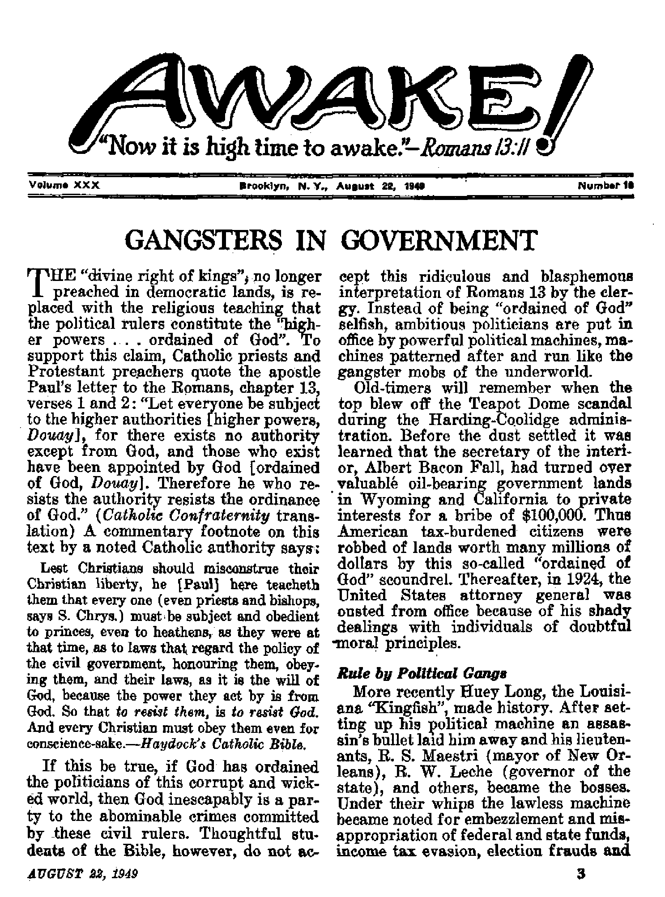

THE MISSION OF THIS JOURNAL
News sources that ant able to keep you awake io the vital Iteuea of our times must b* unfettered by censorship and selfish interests. “Awake!” has no fetters. It recognizes facts, faces facts, is free to publish facts. It Is not bound by political ambitions or obbgationi; it is unhampered by advertisers whose iocs must not be tread upon; it is unprejudiced by traditional creeds. This journal keeps itself free that it may speak freely to you.. But It does not abuse Ite freedom. It maintains integrity to truth.
"Awoke I” uses the regular news channels, but is not dependent on them. Its own correspondents are on all continents, in scores of nations. From the four corners of the earth their unccnsored, on-the'scenes reports coms to you through these columns. This Journal's viewpoint IS not narrow, but Is international. It is read !n many nations, in many languages, by persons of all ages. Through He pages many fields cf knowledge pass in revie w^govemment, commerce, religion, history, geography* science, social conditions, natural'wonders—why, its cover* age is os broad as the earth and as high as the heavens.
"Awake I” pledges itself to righteous principles, to exposing hidden foes and subtle dangers, to championing freedom for all, to comforting mourners and strengthening those disheartened by the failures of a delinquent world, reflecting sure hope for the establishment of a right* eous New World.
Get acquainted with “Awake'” Keep awake by reading *'Awake!”
PuBLi»m> Bem7mqmth.lt Bt WATCHTOWER BIBLE ANT> TRACT SOCIETY. INC.
117 Adam* Street JArtMXljrD 1, N. y., XL 8. A,
N 11 Kjiobb, Frettfasf Quft Sent*, geortnarf
Five mti e eopy Otv doll** a y<*r
NtittaM ttavM t» mu U flOor te jw ou-V7 in cnaaUtM wi* ngftd*t>M* tv ntoew ufl duJtor If VMM7. ItBltUnoM art tvotrltd at BneHji free oouvtrtM wtart M dUct ta to*ted, bf 1iUr»1i»uU *k« vdar ooly.
mt 1* dUwwt *«aiv an Jun hmm u Inal earrt«r.
Met Im rf (vttk naml U*U) mt
■t IMM t*v taa* Win mslfUae sjtew.
Ctaat* tf Hinn irU* mt ti aer «Am any at •xjncW wltii* W» MMtk Sead jw l'A
i< wii h Mt Mdrm
Mot* Turlr Sviwijtitt 'Etta
tairiM, Ilf a&imi BL, Brooklyn 1. X.Y. *1 tatrtNa. 11 Mtirt M., StratidM. U Ceaaaa 19 irrto Aw., Tereeu &, Ontwte *1 ■efluC St Omm Twit*, letiduo. F l ft tat* AHt*. BM tato Bout, Cap, Tim* I*
XaiaW aa trW-ila* MW U WwUf*. K. * , let at 1M *, MT*, rriated I* tT. & A
CONTENTS
Gang Rule in New York and Boston 4
Chicago, Still a Criminal’s Paradise
Your Mind—the BulFe-Eys of
"The Lion Will Eat Straw Lika ths OxM 13
Zoo Carnivores Turn Vegetarian
Poland’s U.N, Representative on
Finding the Lost "Fountain of Youth**
Ever Searching, Never Learning
Seek Life from the Fountain of life 20
Babv-Sitters with "Union*’ Cards
Do You Have a Sittirg Diploma? 22 "Thy Word Is Truth"
In the Awakening from Death’s Sleep
racketeering practices of in1 midation against members and non-members. When the mob was broken up three men committed suicide and more than 200 faced federal and state indictments. At that time state, county and city employees were “kicking back” 5 percent of their salaries, amounting to $1,000,000 a year, into the gang’s treasury.
One of the most brazen money-grabbing Southern gangsters, "that man” Senator Theodore G. Bilbo, of Mississippi, was at one time a licensed Baptist preacher. His career as a bribe-taking politician dated back to 1910, when as a state senator he was asked to resign, being unfit “to sit with honest, upright men . Later, as lieutenant-governor and then as governor of the state, Bilbo’s shady, under-the-table deals with contractors for paving jobs almost bankrupted the state, For 12 years Bilbo was a United States senator, and as such he feathered his nest with all kinds of bribes. From war contracts he received “gifts” consisting of a new Cadillac, expensive household furniture and a private lake for his estate. Also a $75,000 “dream house”, a luxurious swimming pool and a private community church were given to him, and the labor and material costs were charged to the construction of an army air field,
Enoch L, Johnson in southern New Jersey got rich oft a vicious rule of corruption. For 20 years Johnson ostensibly held a $6,000-a-year job as county treasurer, but in reality he illegally scooped in something like a quarter of a million dollars a year. Every political job in his domain, including those of the cops, judges, sheriff and jury panels, were bought from Johnson. All the resort hotels, the gambling dens, the “red light” brothels, and business establishments in general, had to pay for "protection”.
Then there was boss Frank Hague, mayor of Jersey City, N.J,, for 30 years.
During his reign crime and corruption, bribery and intimidation flourished. Brutal racketeers like Joe Fay, narcotic and dope peddlers of the underworld, and hoodlums like Anthony Zavalick, were well protected. The stench of “Jersey Justice” under Hague’s hand-picked judge and jury “system" could be smelled far and wide. High-handed Hague, a tyrant of no small conceit, attempted to suppress free speech and with the arrogance of a Hitler he paffied himself up and proclaimed, “I am the law in Jersey City I”
When it came to money Hague was really a hog for graft; for, how else could he amass a reputed fortune of $40,000,000 while holding down a $9,000-a-year job? At the time he took office in 1917 taxes were $17 on each $1,000, but when he retired taxes were up to $72.75 per $1,000.
Coming from this same unclean New Jersey nest of politics, J. Parnell Thomas for many years sat as an honored member of Congress. His fanatical zeal for “witch-hunting” after "Reds”, and his display of pious “patriotism”, won for him the chairmanship of the “UnAmerican Committee” of the House. But last November Thomas’ ultra-Americanism vanished as a huge gas bag does when it explodes. The deflection came when it was revealed that for a number of years Thomas had padded his office’s expense account with fictitious, nonexisting secretaries, and had then appropriated their pay envelopes, thus robbing the federal government. Charged with committing 34 overt acts a maximum sentence of 32 years and a $40,000 fine could be given this hypocrite who boasted (with lips only) of such loyal love of country.
Gang Rule in New York and Boston
Boss rule in New York city reaches back in to the last century when “phenomenally dishoneat” William M. Tweed, and his Tammany Hall gang, pidaged the city of between 50 and 100 milSoh dollars. During the first part of this century Richard Croker of the Gas House Gang held the power, and after him Charles F. Murphy was so “successful” as the boss he left a $2,000,000 estate. Though the claws of the Tammany tiger are not as long as in the past, yet the stripes of the beast have not changed. In 1940 James J. Hines, a powerful Tammany district leader, was “sent up the river” to Sing Sing prison for his dealings with an underworld gangster named “Dutch Schults”.
One of the ring leaders of Tammany today is Edward J. Flynn, one-time Democratic national chairman. This is the Flynn that made a deal with a mortgage company which resulted in a loss of more than a million dollars of public funds; the Flynn who at one time appointed gangster “Dutch Schultz” as a deputy sheriff; the Flynn that Truman tried to send to Australia as an ambassador. Public opinion blocked this, when it was learned that Flynn had stolen paving blocks from New York city for his private estate.
Sometimes the gangsters, clothed with judiciary robes of authority, sit behind the bar of justice in the courts of law. One of these, Thomas A. Aurelio, a New York City magistrate, coveted an appointment as a Supreme Court justice. His nomination was arranged by his pal Frank Costello, the same Costello whose criminal record showed he was an exconvict, racketeer, gambler and associate of the country's worst gunmen and cutthroats. Among criminals of the bar, however, the name of Martin T. Manton will probably outlive that of Aurelio. Notwithstanding the fact that he was a United States Circuit Court justice, the tenth-highest ranking jurist in the country, and a highly honored Catholic Knight of St. Gregory, Manton had a greedy appetite for graft When caught he was shipped to Sing Sing on a 2-year sentence and a $10,000. fine for selling justice.
Boston’s most celebrated political gangster is none other than the mayor, James Michael Curley. Following his conviction in Washington, D.C., on a $60,000 mail-fraud deal in war contracts, Curley returned to Boston, where a National Guard band and a large mob, Catholic priests included, were at the station to welcome the “hero”. After using every dodge and trick, including the “failing health” hoax to escape punishment, and after two appeals to the Supreme Court failed, crook Curley paid a $1,000 fine and entered a Federal prison June 26, 1947, on a 6 to 18 months' sentence.
Convict Curley served only five months when Truman commuted his sentence and restored his civil rights, thus permitting him to skip out on any parole regulations, and sent him back to his $20,000-a-year job as the city mayor and boss of Boston's political machine.
No city in the world is more notorious for gangsters than Chicago, Ill. Back in prohibition days Al Capone’s gang of gunmen and cutthroats committed every crime on the calendar: bank robbery, kidnaping, murders, racketeering, bootlegging, dope-peddling, income tax evasion, and operation of bawdy houses ami gambling dens. Today that city of sin is run by a new generation of gangsters, political and otherwise, that do an illegal business with gross receipts estimated at $700,000,000 a year.
Chicago is still one of the erookedest cities in the world. . . . [The same old rackets] still persist and along with them the unholy alliance between criminal, cop and politician. . . . The mobsters still have their friends in high places—in politics and the police department. . . . There is one infallible axiom about rackets—wherever they exist the politicians and the police are in on them, for gangs and graft go hand in hand.—Life, Nov. 29, 1948.
One of Capone’s close friends, a fellow named Roland Libonati, was also associated with a convict named Murray Humphreys. Today this same Libonati fe reportedly a state senator. Another state senate? is Lawrence Dowd, a name worshipfully spoken by the racketeers, This is because politician Dowd finds the time, also finds it convenient, to defend as their lawyer the underworld gangsters in Chicago's racket court. During 1947 he defended in the courts some 500 of these bloodsuckers of human society.
Gangsters in High Places
"To the practical political eye/' says Newsweek, "there was never anything to equal the old Pendergast Democratic machine in Kansas City, Mo., a decade or more ago?’ Gambling places, lewd shows, honky-tonks and peep joints were more plentiful than in Paris. As a newspaperman once observed: “With the possible exception of such renowned centers as Singapore and Port Said, Kansas City probably has the greatest sin industry in the world.” Elections were a myth. Thousands of voters had vacant lots and cemeteries for addresses, and at one time more than 60,000 of these "ghost" votes were found. All of this was the doing of the gangster machine run by Thomas J. Pendergast.
The country's president, Harry 8. Truman, is a product and a dues-paying member of the notorious Pendergast machine, and he was faithful to the boss until the day of his death. Truman even flew to Pendergast’s funeral in an army jplane at government expense. More details are given by the columnist Westbrook Pegler:
Kansas City is Truman's old home town. He served as a county commissioner there in the era of some of the most spectacular thievery and vice in the criminal history of the United States. . . . After he had become president and a lot of the vermin 6f the Pendergast underworld had served their prison terms, TTiiTnan gave them presidential pardons. They were his old political comrades.
They had served the same old crooked master side by side with Harry.
Since Truman became president he has taken over some of Pendergast’s bossing duties, as shown when he ordered the defeat of a man named Slaughter in the Kansas elections. Now it is the Truman-Pendergast machine, but not everyone relishes a president that wears the breeches of a gang boss. For example, one newspaper says:
Thanks in no small measure to The Tribune, the people of this nation know Mr. Truman for the’nincompoop he is and for the vote-stealing, graft-protecting, gangsterparoling Pendergast man that he is. . . . Mr. Truman's devotion to gangsters was not confined to the Missouri brand. Pretty soon his parole board had released four of the leaders of the Capone mob.
Thus, with corruption in political integrity reaching up to the highest level, and the creed of gangsterism believed in and practiced by the most noble leaders, it is not surprising that many “smaller fry" engage in crooked dealings.
Swindlers in the government got rich quick passing out war contracts. Maj. Gen. Bennett D. Myers and Lieut. Gen. Ira Eaker became mixed up in a $22,000,000 airplane contract with Howard Hughes, and before Meyers knew it he had made $90,000 in crooked bond dealings. During these investigations of fraud it leaked out that Senator Owen Brewster had used his office and position for his personal advantage ana the interests of his own airline. Another "superman" of gangland was Congressman Andrew Jackson May, chairman of the powerful House Military Affairs Committee, and at one time a Baptist Sunday ^school superintendent and Bibleclass teacher. This pious crook connived with a munition combine, accepted a $53,000 bribe, committed 35 overt acts, was convicted and sentenced to prison.
Let none think these few examples are the only gangsters in government. The political parties themselves are nothing more than glorified gan^B controlled by leaders. A national election is to be held. City, county, state and national bosses call a convention. Dummy speakers are set up, huddles are held, caucuses are called, deals are made. Finally, the gang’s strong man stumps the country in a multimillion-dollar mudslinging campaign. The people vote and the winner, called the "people’s choice”, passes out juicy political jobs to the cronies of his gang.
Religionj it is true, takes a very active part in politics. At the party conventions last year leading clergymen opened each day’s session of ungodly noise and confusion with prayer. Cardinal Dougherty prayed over the first Democratic session. Clergymen across the country took part in the campaign. "Chicago clergymen have joined in a 'get out the vote5 campaign for November 2 during which all the city’s church bells will be rung at intervals.” (New York Times) Nuns and priests were urged to go to the polls. The pope cabled Truman upon his election: ffWe convey our cordial congratulations to yourself and your family,” A special, mass "to ask divine help at the beginning of a new session of Congress” is held each year, and Congress hires a clergymen to pray for it daily.
Religion likewise participates in the politics of other nations. Throughout Europe the clergy are noted for their political intrigue. In Mexico the faecistic Sinarquistas organization is backed up by the clergy in an attempt to overthrow the government. Last year in' Italy the pope told Catholics it was "a grave sin, a mortal L fault” to refuse to vote. Cardinal Griffin, of London, declared: "To refrain from joining a party on ground that politics are a sordid affair is no excuse.”
Most ridiculous! The clergy admit that politics is filthy and rotten, "a sordid affair,” yet they support, bless and worship it. Blasphemously and presumptuously they even command God to ordain these politicians the world over as His representatives no matter to which gang they belong. “Stalin Selected by God, Moscow Patriarch Says.” (Headline in New York Times, Mar. 12, 1948) Another headline: "God on Spain’s Side, Franco Tells Youth.55,(New York Times, March 30, 1948) Or, as Spellman’s administrator of St. Patrick’s cathedral, Msgr. Flannelly, asserted, Americanism is "the preservation of God’s order in government”.—New York Times, July 5, 1948.
The very fact that the Vatican, as a friend of this world, maintains diplomatic relations with over forty countries, and the fact that hundreds of politicians, like the former secretary of state Marshall and Vice-President Barkley, beat a path to the Vatican’s door is the strongest proof that God has not ordained either the politicians, or the religionists. There is no question on this point, for God by the mouth of the apostle declares: "Whosoever therefore will be a friend of this world, becometh an enemy of God.” (James 4:4, Douay) This is because "the god of this world” is Satan the Devil. (2 Corinthians 4: 4; John 12: 31; Ephesians 6:12) Consequently, the fraud, skullduggery and criminal corruption that honeycombs every human government is of the Devil, and, be assured, Almighty God does not ordain such misrule.
The real "Higher Powers”, the high authorities yhom the apostle Paul says Christians should worship and honor are none other than the Universal Sovereign Jehovah God and His anointed and ordained Theocratic King Christ Jesus. While rendering unto "Caesar” what is Caesar’s true Christians never forget that they must be obedient servants of the true Higher Powersl for only by such Supreme Powers will a righteous rule come.
IN THE last several years farmers. gardners, livestock raisers, dairymen, even whole municipalities, have enthusiastically covered home, hamlet and countryside with heavy insecticide fogs containing DDT. Now public health officials, medical men, bird lovers and naturalists, and the general public, are waking up to the fact that this ^miracle” killer of insects is also a menacing danger to the life and safety of man and beast. When used indiscriminately and uncontrolled this synthetic blessing becomes a chemical curse.
For your own and the public's safety, know when and where to use this high-powered fly and mosquito killer. A mixture containing 1 teaspoonful of^DDT in 100 tons of water is strong enough to kill cold-blooded fish. Minute amounts destroy bees and other insects that are beneficial to man. Only about 500 of the 25,000 different kinds of flies are injurious or annoying to man; the rest are either harmless or are very useful in pollen ating flowers.
If used in wholesale quantities, DDT also kills bird life. A heavy slaughter of quail takes place if 4.5 pounds of DDT per acre is applied to their nesting grounds. Bird life in general is reduced from 50 to 65 percent in areas dusted with DDT. This in turn leaves man without his best ally in the battle against the bugs. A potato bug, for example, has only about 50 young ones at a time, but there^re some 13 generations of them in a single season. Uncontrolled, and without the help of birds, man would be faced with 10,000,000,000,000,000,000,000 "’tater hugs” born to the thirteenth generation! Actually birds consume harmful insects by the ton. A nighthawk devours 500 mosquitoes in a single meal. A flicker is known to have carried as many as a thousand chinch bugs in its crop at one time. The wren makes as many as 1,200 trips feeding its young in a dawn-to-dusk airlift operation. Every precaution, therefore, should be taken to guard birds against the dangers of DDT sprays and dusts.
The immediate danger that alarms officials more than the destruction of wild life is the fear that man himself will become poisoned indirectly through indiscriminate use of DDT. It has been suggested by some that the mysterious ‘Mius X” is nothing more than DDT poisoning, but according to Science News Letterf the U. S. Food and Drug Administration does not think so although the two have similar symptoms. To avoid DDT poisoning never use this spray on fruits and vegetables that are to be eaten, for when dry it does not wash off even with soap and water. Do not use it on string beans, cabbage, cauliflower, asparagus, or beets and turnips if the tops are to be eaten, or on such fruits as apricots, plums, cherries, avocados, olives or strawberries, blackberries, raspberries, gooseberries or currants.
’£? It is OK to use DDT sprays on apples and pears provided they are peeled for canning purposes. Also on grapes that are used for wines or jellies; on peas that are shelled; on tomatoes that are skinned or squeezed. There is no harm if used on hard-shelled crops like squash, melons and pumpkins or on vegetables that are developed below the ground, such as potatoes, carrots, parsnips and radishes.
It is now definitely known that DDT sprayed on animals is rapidly absorbed by the fat, and in the case of dairy cow this means that it will show up in the milk and butter fat, and in turn will reach the large metropolitan areas not only in the milk but in ice cream and other food products. While the authorities are quick to quiet any fear that this has happened so far, they are also quick to warn of the danger, and therefore advise against the usage of DDT as a spray in or about a dairy barn, or the cows themselves, or on their hay, forage or field corn that is used for silage or any other material that contacts the cows. Like so many other things, DDT has its place, and, if need intelligently and in the proper places, it is veiy effective against flies and mosquitoes. Around the house it is all right, provided food and pets, such as eats, dogs, goldfish and canaries, are removed from the room until the vapors settle. Remember, if your spray gun is loaded with deadly, DDT beware at what you aim it, otherwise its lethal contents may backfire on you later.
HEAVY artillery has humanity under bombardment, and your mind is the bull's-eye its salvos seek. Thq cold war of words is a heated battle for your mind. The ‘Voices” of nations invade foreign lands, only to be jammed and countered by retaliatory wind-jamming. Like a flame-thro wing tank the printing press spues out columns of inflammatory invective, only to ignite backfires from the singed opponents. And from pulpits religious firebugs squirt streams of oily words calculated not to calm troubled waters but to intensify flaming hatreds. The result of such reckless international use of radio, press and pulpit is to make the earth a maelstrom of charges and countercharges, a foaming, boiling whirlpool of propaganda wherein weighty truth and logic are sucked under and frothy Smear and name-calling churn to the surface to capture eye and ear.
This wordy war on the international front is fought in miniature on battlefields of national and community and individual scope. The methods used by the propagandist are the same, whether he is a diplomat in United Nations or a boy in the street. Accusations and denials, hot charges and hotter countercharges, smears and slurs, personal digs and name-calling, telling of half-truths and suppressing of whole truths—all such tactics are marshaled to assail your mind and take it by storm. Evidence and reasoning and logic! The. propagandist's deadliest foes! Rout reason and stimulate passion. As emotion rises judgment is smothered, and under the lash of
AUGUST 1949
k stinging words and reckless 3k rhetoric the mind is driven along propaganda's path.
y Modern methods of communication have laid bare * the target, the mind of the masses, to the pictorial and verbal barrages, Wherever one goes, whichever way he turns, he is met by frontal attack or flank assault, by ambush or bombing from the air. Propaganda is shot from the press, blared from radio, flashed from movie or television screen, projected from advertising blurbs, slung from pulpit and political platform, and even disjied out through the comics. In w&ve. after wave of round-the-clock bombing with words the propagandist pours his guided missiles into the public’s eye and drums them into its ears till the mass mind is groggy and numbed, till reason and logic have been drowned in the rising floods of emotion and passion. Truly the pen is mightier than the-sword. Not the pen that signs peace treaties and then is put in a musty museum to be for-gotten, but the propagandist's pen is the one mightier than the militarist’s sword. His printing press sways more than the atom bomb blasts, his radio and television and movies pack more wallop than the superfortress.
With his arsenal the propagandist can change the public's mind more easily than he can his shirt,.and just as often. Public opinion is the puppet, he the puppeteer. For example, a radical change in a nation's foreign policy is simple. An irresponsible source hints at the change, responsible sources deny it. But the ru-
9 mor crops up again. Again domett nut less vigorously. As the change is yodeled louder and the denials weaker, the public that was first aroused becomes used to the idea and subsides, and soon responsible and irresponsible sources see eye to eye and the change is effected.
Or take the theory of evolution. It cannot be proved; so learned authorities make assertions, and only ignoramuses dare dispute them. And if any timidly, suggest evolution conflicts with the Bible, the worldly wiseacres indulgently smile at the simple souls and smear God's Word as an ancient myth. They prove neither their assertions nor their smears, but by the tyranny of authority seek to enforce their opinions and override objections. Name-calling was exemplified in the recent case of Cardinal Mindszenty- Ignoring the evidence, manufacturing a fable of drugging, the exposed religionists threw up a gigantic smokescreen of’name-calling to divert attention from the facts. It worked. Why^ Because the masses of people no longer do their own thinking. They think by proxy. They let political and religious propagandists do it, then they are content to lap up this secondhand thinking.
Dr. Edward U. Condon, chief of the United States Bureau of Standards, lamented the senseless hysteria into which Americans have beefi? thrown by propaganda, saying: “I know that these are difficult times, but it is ironic and disheartening to see this, the most powerful and wealthiest of nations, in the grip of hysteria and fear—for no sound reasons—and unable to consider the e-”riems of the world in a sane and ced fashion.”
The fact is that many have lapsed into mental laziness. Instead of reading they prefer picture papers and magazines. And when they read, they insist upon short squibs and shy from any article of sufficient tengtn to paint the inn picture. They can take length in entertaining fiction, but not in articles calling for concentration. News of consequence is pushed aside untasted while they gorge on sensationalism, crime, froth and nonsense. Propagandists commend this mental deterioration. Last October publicity was given to the write-up of an associate editor of one of the Scripps-Howard newspapers, entitled “Bring On Some More Nonsense j” He said, in part:
I am delighted to learn from the front page of The News that the onee-popular sport of flagpole-sitting has been revived and that Ozzie Hamilton Osborne, after 53 days atop a tower at a Long Beach, Calif., amusement park, has broken the 49-day record set by Shipwreck Kelly in the 1930s. rd like to see a lot of other nonsense restored. ... As for myself, I never went in for guzzling guppies or swallowing goldfish, and my sympathies were all on the side of the pleasant little creatures that maybe would not rather be gulped. Yet that pastime, confined mainly to the so-called institutions of higher learning, was at least indicative of a carefree spirit that is needed today, . . . We need folly.
On November 13, 1948, the New York Daily Mirror carried an editorial in similar vein, which said: ‘Terhaps even at this late hour we may save our national sanity. The City Desk has a bulletin that a girl student in Pennsylvania ate 71 grasshoppers and pronounced them 'good, but kind of tickly'.”
Even among those who do zealously use their brains, who have not allowed them to become weak-willed or lazy, a difficulty exists. The field of human knowledge has become so broad that one cannot encompass it. They try to either be informed on many things or specialize and become just another well-oiled cog in a gigantic machine. Either they scratch the surface of knowledge in many fields but never penetrate to subsoil to anchor knowledge with tap roots, or they sink themselves deep into one field and have no more panoramic view of the world than a worm. They know either very little about very much, or very much about very little-
“Take warning; of the making of many books there is no end, and much study is a weariness of the flesh!" If that was true in Solomon's day, certainly its truthfulness has been multiplied many times over since the invention of the printing press. This invention has loaded library shelves with millions of books and daily fills the mails and burdens the newstands with hundreds of millions of magazines and newspapers. What a weariness to read only a fraction of them! In a bedlam of competition for your mind they clamor for your attention. They would monopolize your mind, fill it with their words, weary it with their propaganda till no mental energy be left for independent thinking.
In this hurried day some elimination of reading must be done. What is expendable? Oddly enough, some think it is the best seller of all time, the Bible. So they streamline it, cut out the slow portions, compress and squeeze it into fewer pages; and by so doing put themselves into the tight spot of 'taking away from the words of God's book'. (Deuteronomy 4:2; Revelation 22:19) The Bible was the one book excepted by Solomon when he warned against the endless stream of books and the wearisome study of them. Such "pleasing words" and "true things” he commended: "The words of the wise are like goads; and collections which are given by one teacher are like nails driven with a sledge?'—Ecclesiastes 12:10-12, An Amer. Trans.
The wise words of the Bible, collected together in one volume, inspired by the one great Teacher, are like goads that keep our imperfect flesh moving in the right path, and are like nails pounded in with a sledge, and to which we can hang, confident that they will not pull out and fall with us. Those refreshed and strengthened by such unwearisome study of God's Word will have an anchor sure and steadfast, will not be slapped and tossed and battered about like a wave in the restless seas of humanity over which the changing winds of propaganda blow* Such “wisdom is a defence” and “pre-serveth the life of him that hath —Hebrews 6:19; James 1:5-8; Ecclesiastes 7:12, Amer. Stan. Ver.
Propagandists make men their tools, but they are blind to the fact that they themselves are only dupes of the Devil. Satan has spawned modern propaganda to blind men's minds to the truth of the Bible and the establishment of Christ's kingdom in these tumultuous "last days". He and his demons through visible dupes in all nations have a line to feed and a bait to hook nearly all types of minds, (2 Corinthians 4:4; Revelation 16; 13-16) His latest device to conquer minds was speculated upon by Dr. John Ely Burchard when before a convocation of scientists he ventured that “ability to control man's thoughts with precision is by no means out of the question”, Satan can now do it with the propagandists even more easily than they can with the public, and neither victimized group is aware of it. Soon men can war for a fifth freedom—freedom of thought.
But against all the assaults of Satan and his lesser propagandists there is sure defense. "Wisdom is a defence,” Because true Christians "are not ignorant of his devices" Satan cannot take advantage of them. (2 Corinthians 2:11) Knowledge of the devices of propagandists will be defense for your mind. Eat not at their tables filled with filthy smears, slurs, lies, name-callings, inflammatory invective and distortions, nor glut your mind with crime and sensationalism* Feed your mind on God's Word, and Satan's propaganda will miss its target.—Philippians 4:8; Proverbs 14:15; 23:7; Ephesians 6:10-17,
CARNIVORE is a term that broadly refers to those animals that prey upon other animals. More narrowly defined, carnivore refers to the order of mammals that are more or less adapted for predatory life. At any rate, they are capable of living upon prey. Hence most animals popularly called “beasts of prey” are carnivores. Originally they were vegetarians. Eventually they must undergo a reconversion program in eating habits.
According to the scientists the role of the carnivore is to keep check on too rapid multiplication of the herb-eating creatures and rodents. If these were not kept in cheek, it is argued, their numbers would become exceedingly injurious to civilization. Tp illustrate the point: the United States government in the latter part of 1947 launched a nation-wide food saving program designed to save 100,000,000 bushels of wheat for European relief. It was a high-flown, expensive drive, involving meatless Tuesdays and p^ultryless Thursdays. In the midst of the program announcement was made that rats were destroying 100,000,000 bushels of wheat annually—the same amount the Citizens Food Committee was trying to save. Thereupon Mr. Truman Pierson, president of National Cat Week, took to the air to urge people to wake up to the importance of cats, which could, if given the chance, keep down the rats and thereby save as much wheat as the whole streamlined food saving program was trying to save. It made a beautiful plug for the cats, anyway.
Carnivores are not only decimators of other creatures, but in less civilized areas the big flesh-eaters hold their own even against man. In some tropical sections of the earth the tigers, lions, and leopards kill hundreds of humans yearly. The Bible records many instances in which, in ancient times, the beasts of prey were a foe to be reckoned with.
While the Israelites were en route to the Promised Land Jehovah forewarned them that He would not drive out the occupants of the lafid from before them all at once, but little by little, “lest the beasts of the field increase upon thee.” (Deuteronomy 7:22) Showing that He himself would employ the predatory nature of the wild beasts against them if His name people walked contrary to His laws, He warned: “1 will also send wild beasts among you, which shall rob you of your children, and destroy your cattle, and make you few ih number; and ypur high ways shall be desolate?’ On the other hand, if they faithfully obeyed Him, one of the blessings Jehovah would shower upon Israel was this: “I will rid evil beasts out of the land.” (Leviticus 26:22,6) At Armageddon the predatory creatures, both fowl and beast, shall feast upon the slain multitudes of humanity from end to end of the earth until they are filled and sated.—Ezekiel 39:17-20.
In their relationship with men, some striking things are to be noted about carnivores, Man ruthlessly exploits all creatures, some of which have little or no means of defense. It is the carnivores principally that have some means of defense, and, having the courage to strike back, they have been branded by man as an enemy, Man wars upon carnivores for their furs, for their flesh, for protection both for himself and domesticated animals, and for “sport* Carnivores are considered on the whole untamable and naturally ferocious. Yet it is out of their numbers that man has cultivated his two most affectionate pets, the dog and the cat. The theory that some creatures can never be tamed under any conditions has yet to be proved, while the facts show that it is the human treatment that counts. The most docile creatures, like the ox and the chicken, grow wild when not domesticated; while at the same time the cheeta, the ferret and mongoose have been domesticated from the most ancient times of Nimrod.
Another point of controversy involving the carnivores is diet. It is the prevailing theory that carnivores could not thrive, nor in many cases even live, without meat It is observed that the variation in diet and mode of life exhibited by flesh-eaters is accompanied by a corresponding variation in the limbs and other external organs, and by the teeth and skeleton. That is, the more structurally equipped to prey, the more predatory are the carnivores and other flesheating creatures. Highly organized species, apparently adapted with strong, sharp claws for seizing prey and with powerful, long, piercing canine teeth for tearing flesh, live
almost wholly up- -Q
on the flesh of
warm-b 1 o o d e d J^JWtTOCT/
animals. But these formidable organ s can be used in gathering and de- a
vcuring other IJ/jMI forms of food
than flesh, as is KMB||RK£^GgU demonstrated by creatures so
equipped and yet B5R9QrH|B9BM which eat almost
no flesh. The bear typifies a large group of carni-AUGUST 22, 1949
vores, buf when the food of his choice is available he is almost wholly a vegetarian.
The carnivore, when “on his own", kills and rends his prey, sucking the blood and consuming the vital organs and its undigested food, and in that way attains a nutrition far different from the dog that is fed pure lean meat. From the undigested food in the rabbit or quail, the dog acquires the food values of natural grain, vegetables, and fruits. Therefore the dog or the lion or any other predator cannot be strictly a carnivore. It is not flesh alone that furnishes the eater all the food values he must have.
That is why, to duplicate a well-rounded diet for carnivores, the feeder must remember that when he is feeding meat alone, he is not supplying a well-rounded diet. To the meat diet must be added grain, vegetable and fruit foods if the carnivore is to receive the same kind of diet he would get if he lived on quarry. From a nutritive standpoint, the carnivore does not have to eat meat at- ail. Then what stands in the way of the carnivore's living on a non-meat diet?
Apparently there is no other real obstacle than habit. The habit, of course, may be enforced by the intense struggle for existence. Naturalists say that ages ago the dog was inclined to gnaw on raw vegetables with relish and with healthful results.
1// 1ft Hut after centu-ries of living on a meat diet, he suf-f e r b indigestion from raw foods other than meat. Like his human benefactor, the dog must have his vegetables cooked if he is to eat them. Dogs are physically e-quipped, never-iaBHESBErasSHQl theless, to handle
the leafy vegetables such as spinach, lettuce, celery tops, beet tops, water cresses, and the like. Orange juice is good for dogs. The most important vegetable on the dog's diet is the tomato (which may be more properly termed a fruit). Physically, then, the dog is capable of living as a vegetarian.
A notable carnivore is the mink, Commercial mink-raisers feed a basic diet of about 80 percent meat or fish. But experimentation with meatless diets has exploded the theory that mink must have meat—or else. Two mink-raisers reported in The American Fur Breeder that they were feeding their mink a basic grain diet of dog meal to which they added some extra vitamines, phosphorus, and protein. Into this basic grain diet they mixed carrots, lettuce, tomato juice, raw milk, sugar, salt, cod liver oil, and egg. The mink fed on this meatless diet developed silky guard hair and underfur of a beautiful hue with very good density; the animals continued to show this beautiful prize condition long after the usual prime condition period.
The most spectacular triumph in feeding carnivores on a meatless diet was carried out during the war. Faced by a meat shortage, British zoo-keepers discovered that wild animals, the most avowed beasts of prey, could, if necessary, change their diet. The fruit-eating monkey learned to get along on vegetables. But so did the lion make file change from meat to celery. The tiger learned to chew cabbage, and the wolf gnaWed turnips. “The man-eating tiger of Bengal/' according to Magazine Digest, “now reaches for a stalk of celery instead of a pork chop/'
Germany, after the war, had to transSort hundreds of zoo animals to the Lon-on zoo, and the newcomers likewise had to face up to the nan-meat diet. The London Times and the Swiss press, as well as other sources, reported that, except
14
for some exotic equatorial species which preferred death to being vegetarians, all the animals adapted themselves to the British diet. In fact, they have put on weight, and their skins and furs are more beautiful than before. The only meat fed to the carnivores is? the remains of one horse between them daily, but all the 9,000 animals in the London zoo are fed a basic vegetable di£t with occasional fish scraps thrown in.
In light of such interesting, and perhaps startling evidence, one is reminded of the Scriptural description of the future Paradise earth wherein the lion will no longer prey upon warm-blooded flesh but “will eat straw like the ox”. The scientific theory that predators are necessary to keep in balance the other forms of life cannot be accepted without more convincing experiments than man is so far able to cite. The prolific “Happy Hunting Ground” of the American red man, for instance, thrived with a great abundance of wildlife, both vegetarian and carnivorous, but it would be hard to prove that without the flesh-eaters the herb-eaters, would have grown out of hand. The .flesh-eating habits of some animals might better he attributed to the struggle for existence in an imperfect earth, an impulse that has been by no means soothed or curbed by man's ruthless cruelty and exploitation.
In the divine record of creation Jehovah's mandate to perfect man was to cultivate the earth into an Edenie. Paradise, wherein the lower forms of life would serve peacefully in their proper spheres, contributing their share toward making the globe a glorious place to live. No account is given of where the Creator allotted some creatures the mission of curbing the increase of other creatures by devouring them, any more than of making a provision to check the numbers of the meabeaters. It seems only reasonable that if the Creator's wisdom
AWAKE ! and power is sufficient to bring forth the many forms of life on earth, that wisdom and power are also sufficient to regulate a balanced population without one order having to prey upon the other. In the Paradise of Eden flesh was not prescribed for food, either for man or for beast. The Record reads:
See, I give you all the aeed-bearing plants that are found all over the earth, and all the trees which have seed-bearing fruit; it shall be yours to eat. To all the wild beasts of the earth, to all the birds of the air, and to all the land reptiles, in which there is a living spirit, I give all the green plants for food.—Genesis 1:29,30, An American Translation.
Only after man’s fall by disobedience did Jehovah sanction the eating of flesh, a provision that will obtain until God's
**(i
time to bring about the long-purposed Paradise on earth under the righteous heavenly reign of Christ Jesus. It is of that time that the famous prophecy of Isaiah 11:6-9 applies literally, to wit (An Amer. Trans.):
Then the wolf will lodge with the lamb, and the leopard will lie down with the kid; the calf and the young lion will grass together, and a little child will lead them. The cow and the bear will be friends, their young ones will lie down together; and the lion will eat straw like the ox. The suckling child will play on the hole of the asp, and the weaned child will put his hand on the viper's den. They wiU do no harm or destruction on all my holy mountain; for the land will have become full of the knowledge of the Lord, as the waters cover the sea.—Contributed.
'Poland's U.N. Representative on the Mintls^enty Case
<L On April 12 Jan Drohojowski, of Poland, said to the United Nations General Assembly concerning the trials of religious leaders in Hungary and Bulgaria: “Let me now tell you very frankly how a ease acquires notoriety and importance. First, there is a spark somewhere which is fanned. If necessary, petrol is put on to kindle the fire. This occasions a conflagration. The conflagration puts the instigators of that Are in the spotlight of public opinion. They enjoy that. They come to the world forum, which is this General Assembly. The press, the wireless, and possibly television, give them some much wanted publicity. . , , And here, of course, in the blaze of that fire, the proponents' of the motion bask in their glory and acquire popularity at the expense of good relations between nations and the United Nations. Beware of the day when the fire engines of the United Nations are not prompt or efficient enough to prevent the spreading of the conflagration. Then, the little boys who started the fire may have the seats of their trousers burned.”
He next asked who it was running to the rescue of human rights in Hungary, and scored Australia for her treatment of the aborigines in that land. And on Bolivia he quoted the criminal code: “All who conspire directly to establish another religion in Bolivia, or to cause the Republic to cease professing the Roman Catholic apostolic religion, are traitors and will suffer the penalty of death?’ He then said: “If the General Assembly is eager to review criminal cases, then it would be'well advised to look into two causes cetebres which are known to have ended in miscarriages of justice. I have in mind the Sacco-Vanzetti ease and the Scottsboro case. I wish to appeal to the United States, delegation to stop talking about exporting democracy. I say to them: 'You haven’t got enough for home consumption.’ ” He concluded with a summation of the evidence against Cardinal Mindszenty, including the following: “Subversive plans, based on the assumption of an early third World War, have been made in the most immediate neighborhood of St. Patrick’s Cathedral under the protection of the purple of His Eminence Francis Cardinal Spellman.” [The New York Times, April 13, 1049]
fountain of youth
YOUTH is the elusive treasure of dying mankind. Youth, with its strength and vitality, its boundless energy and carefree happiness! Thirst for it has spurred men and women to fight off the advances of old age, to pursue to the disappointing end the myriads of schemes to capture youth. But still the multitudes are snatched from the land of the living by the cruel hand of death even as they pursue the mythical “fountain of youth". ,
Down through the ages, from the earliest times, mankind has diligently, yet fruitlessly, searched for the mystic “elixir of life”. Ancient writers and philosophers, including Aristotle and Pliny, fired the imaginations of men with claim's that they knew someone who had found the secret formula for a special life-giving fluid. In Aristotle’s Book, of Secrets, and other works, reference is made to various concoctions, unguents, oils and liquids, presumably good for pickling one’s youth and preserving it against the disintegration of old age.
One of these recipes tells how to make a life-giving witch’s brew out of the following ingredients: gold, pearls, "an-thos” flowers, ill-smelling ambergris, fresh aloe wood from India, a bone from a stag’s heart, a couple of snakes and a quantity of blood. Another formula says that if dragons are first tamed, then ridden, and then eaten, it is a sure cure preventive against old age. And how! for the tamer, rider and eater would die young.
The first to claim they had special powers to unravel the mystery of life and rebraid it into a longer strand were the priests and wizards and the jugglers of demonic religious magic. After them
came the alchemists of the Dark Ages who diligently searched for an imagi
. nary “philosophers’ stone”, the elixir vita, believing it was able to prolong life and restore youth. As a means of warding off death, others conceived of the idea of striking a bargain and making a compact with the Devil. Still others with the spirit of adventure set out for the edges of the world, where they hoped to find life-giving waters in. golden pots at the end of the rainbow. Ponce de Leon was one of these, who in .1513 went searching for the Fons Juventutis, the fountain of youth, in Florida, and found death instead.
Modern Science Takes Up the Chase
Taking up where the alchemists left off, scientists of this twentieth century have, with renewed effort, attempted to solve the age-old mystery of life and death, and find the key that will open before man a life of perpetual youth. Using modern tools like electron microscopes, atom smashers and radioactive isotopes, these learned men of science, through advanced research, have probed deep into the problem.
Asking, ever asking a thousand questions; searching, ever searching for a thousand answers as to why mankind grows old—such is the science called gerontology. Why do men get sick and die? To what extent does infection, poison and decay bring on old age! What about the circulatory and respiratory systems? What relation is there between longevity and microbes, enzymes, hormones and vitamins? What about heredity! To what degree does diet, overweight, fast living and mental worry
usher in old age? What about metabolism? How much truth is there in the endless number of theories about the cause and cure of old age? In short, how can the undertaker be put out of business and life eternal be obtained?
Thirty years ago microbes were accused of causing old age. If only infants from their birth could live in freedom from infection and disease they could live forever, so the theory went. Tests were made. Eighty-seven successive generations of fruit flies were bred and raised under totally antiseptic conditions, Results: in due time the flies all died and with them the theory too. Enzymes, those strange substances of organic chemjstry, were next chased down by research with the hope that possibly they held the key to the mystery of life. Again the theorists were wrong.
Probing around, scientists found that a number of glands, particularly the thyroid, adrenals and pituitary glands, played a strange part in man's behavior. Aha, they thought, here in the thyroid we shall ffl MF find life's secret! But further investigation only proved how misplaced their hope. It was observed that when men reached their “change in life”, and their procreative powers became fagged out, their glands no longer functioned. The idea of grafting in potent monkey glands was conceived, experiments were started, and Prof. Serge Voronoff, of France, announced after World War I:
The conclusiveness of certain experiments I have made convinces me that it is now possible to renew youth and vigor in aged men in the last stages-of senile decrepitude. . . . It now remains for us to try grafting glands from a monkey to an aged man in Order to assume the correctness of my theory that the spring of eternal youth has been discovered.
Newspaper headlines around the world carried the story. X Excrement of the dying race * ran high. Maybe here at last science had found the answer. Time, however, has proved that monkey-gland grafting is only a joke.
Another line of research led to the isolation of the sex hormones, which, in && k turn, were injected into the blood stream of worn-out men in the hope of increasing their ISf-T J longevity. To this day there is no proof that hormones are anti-aging agents, and some authorities have warned that such practice may even shorten one’s natural life. Says Dr. George Lawton, Ph.D.:
The man who doses himself with testosterone (sex hormone] in the hope it will revive the appetites and ardors he enjoyed at 25 is doomed to bitter disappointment. Replacing a single worn-out cog won’t renew the whole machine; and no amount of restored sexual vigor can make a grown man see the world through a boy’s eyes.
Dr. V. Korenchevsky, of Oxford University, says that sex hormones fail to restore youth because they fail to remove the causes for the breakdown of the glands. He also warns that a degenerated “old organ or tissue cannot stand vigorous stimu^tion, but may collapse from paralysis, just as a tired horse, when whipped to do extra work, cannot withstand the strain and suddenly collapses from heart failure”.
To get around the obvious stupidity of trying to replace a single cog or tooth on a woTn-out gear certain technicians have gone a step farther and have tried to replace whole gears in the human machine. Toying with this idea the Russians announce success in transplanting hearts in frogs. Candidly, replacing an entire organ with a new one will never rejuvenate a-man when the rest of his engine and chassis is broken down and rusted out.
Then, what about vitamins? A new vitamin is discovered which they think will increase the body’s resistance to infection. Another is found to boost the life-span of rats 10 or 15 percent. The vitamin craze is increased and the fad spreads; sales are boosted and consumption doubled, and still old age and death collect their annual toll As Tniman’s personal physician warns, indiscriminate use of vitamins is dangerous and may yven cause death.—New York Times t December 17,1946.
Like flighty butterflies, men's theories lead scientists over many hills and dales in their pursuit of the fountain waters of youth. Theories on heredity, diet, environment and mental attitude as longevity factors have been chased down, Mrs. Shindler of New York state recently celebrated her 100th birthday Her grandmother lived to be 107. Is it true, lien, that long-living parents have long-living children and grandchildren! Do hereditary genes tick off the seconds like a "time clock”! Or do the genes contain the total life-force, and does it trickle out as the sand in an hourglass until death is reached! Science seeks to know.
Some say that the mental attitude is an important factor in growing old. <fDeath is a matter of psychology and mentality. Death is simply a fear carried into effect. We are told that we will probably die. ... As we think, so we are. To live forever we must conquer the tendencies that destroy life.” So wagged the pen of a so-called biologist. “Refrain from worrying” and "be moderate in all things" is the sure cure for old age, as prescribed by another antiaging medicine man. But honestly, old age is not altogether in the mind. As one has said: "The trouble-with age is that the spirit is willing but the flesh is weak."
Biologically, individuals do 90 percent of their growing before birth, 9 percent between birth and their 20th birthday, and only 1 percent all the rest of their lives. Theorists have suggested that the life span can be lengthened by delaying maturity, that is, by spreading some of the 9 percent growing out over the latter part of one's life. Others have suggested that since growth stops altogether at death, then, if growth can be speeded up when it begins to slow down, youth might be maintained.
It is no secret, eating is closely allied with living. Yet, what happens after the food is eaten is not always understood. Some investigators think that if metabolism:—the process whereby cells use fuel for body growth, development, repair and release of energy—were fully understood the life span could be extended beyond its present limits. Under a newspaper headline: "Finding of Key to Life's Origin Predicted Soon," Dr. E. N. Harvey, of Princeton University, is quoted as saying: "The protein problem is absolutely at the basis of life. If we knew how proteins are synthesized we would know how life began.” Others, prying into the secrets of life, imagine that there is a “primordial clay” called "proteinogen” which evolves into proteins to form the building blocks of the body.
Working at the other end of the lifecycle are those geriatricians who say that old age is nothing more than a disease, which, in due time, will be cured. These argue that since it is possible to live much longer by avoiding degenerative diseases like diabetes, hardening of the arteries, heart disease, etc., and since anemia and diabetes are due to deficiency of certain chemicals, it is reasonable to think that old age also can be cured if the right chemical is found.
This, of course, is only another theory that does little more than excite the imagination. While it is true that penicillin and similar substances have set good records in the treatment of certain ailments, it is also true that they have added little to man's age limit. They are no more "miracle" drugs in perpetuating youth than insulin, which was praised to the highest hesven twenty-five years ago. Headlining this treatment for diabetes at that time, the Philadelphia Bulletin declared: “1,000-Year Life Span May Be Mart's Lot." Beneath this headline the story read: “Science of the future will transform ordinary mortals into a race of sujjer-men whose life will span ten centuries, according to Dr. Fritz Haber, eminent German chemist."
There are others who claim that old age is a brain-disease. Others .think the reason why we grow old is that the brain cells cease to divide. Still others have the brainy idea that feeble-mindedness is caused by hardening of the arteries in the brain.
Invisible radiation! This electrifying idea suggested to some that maybe here was the “spark of life” with which the human battery could be recharged, presuming it was a run-down wet-cell. First, radium was investigated. Surely it was powerful enough to burn out the spores of old age before they took root. Nowadays gamma-rays, beta-rays, qnd both slow- and fast-moving neutrons are being studied. Even “onion rays”, those strange radiations emitted by growing onion roots, are not overlooked in the search.
Back in 1922, when the activity of white corpuscles was being investigated the headline read: “Longevity Secret Found by Science in Cells bf Blood.” Wrong again. Today the key to sickness and disease is sought in what is termed “sludged blood”. Another circulated theory is that the average heart beats 2,500,000,000 times in a lifetime, and so if one prevents the heart from racing when young he may live to be a hundred years old. Or, if you do not care to count and ration out your heartbeats, another theory dealing with the respiratory system may interest you. This one declares that improper oxygen supply leads to alteration in the molecular structure of the body, commonly called aging.
Since none of these theories have proved true, the search continues. If only a few drops of some super, allpowerful, life-giving fluid could be found! In May of this year it was announced that an extract having great healing power had been isolated from aloe leaves. Last year it was learned that queen bees feed on “royal jelly” rich in pantothenic acid and live twenty times as long as worker bees. Think of it, if man could eat a “royal jelly” he could multiply his present average and live to the queenly age of 1,320 years!
Then, there was that Russian named Bogolomets, who made great claims for a longevity serum back in 1938. When his findings were translated into English in 1946 this wrinkled, thin and stooped prophet of longevity declared: “Normally a man should live to the age of 150 years, that is, if he starts to use my serum when his connective tissues begin to deteriorate.” Alas! two months later poor Bogolomets died, a mere adolescent of 65! Since then 5,000 Californians have been regularly injected-with this serum, known as ACS, to see if any of them will pass over 65 and reach the theoretical 150 mark.
In this mammoth underground cave of human opinion, with its maze of dark, overlapping theories, there is still one more blind alley along which science is groping in its effort to find the secret passageway that leads to eternal life. As a last desperate effort to extend man's life a wee bit longer doctors have tribd various ways to start the heart beating once it stops? Electric shock treatments made the heart muscle of a 62-year-old man in New Jersey pump two hours longer after it had first stopped. The Russian Negovsky claims that 12 ouL of 51 soldiers were revived, after their hearts had stopped, by administration of artificial respiration and transfusions containing adrenalin hydrochloride and glucose solution. But, at the best, these dramatic efforts to increase man's longevity are ever so temporary.
AUGUST 22, 1949
19
In this deadly struggle to live men and women have grabbed at every straw in the wind to buoy up their hope amid the killing, everyday calamities. Statistical straws blown by the wind of propaganda, showing that the span of life has been considerably lengthened, especially in this twentieth century, are hailed with much trumpet-blowing and jubilation. Triumphantly, and with great joy, it has been pointed out by the statisticians of the life insurance companies that in the days of the Roman Empire the average life expectancy was only 22 or 23 years, that in 1800 it was 33 years, in 1900, 47, and since the turn of the century another 20 years has been added. The latest figures show that in the United States, where the average wife faces five to eight years of widowhood, women live to an average of 70.3 and men to 65.1 years, The combined average being around 66 or 67 years. In other parts of the earth the figures vary considerably. People in New Zealand live longer, on the average, than anywhere else, but in India life expectancy is only 27 years.
Primarily, the expansion of the average life span is due to a decrease in the death rate of infants and children. Whereas in 1900 three out of four babies reached the age of 25, in 1947 three out of four reached the age of 57. In India, where the life span is the shortest, one infant out of every four dies before it is a year old, but in New Zealand only one out of forty dies in its first year.
Old-dge theories die young and new ones take their place. Yet, in spite of all that has been learned, and despite all the claims even to this day that scientists are on the verge of solving the mystery of life, it must honestly be admitted that very few years have been added to the average adult's age. Very little progress has been made in the treatment of degenerative diseases. Since 1900 only four years have been added to the span of
20
those that reach 40, and only 1} to the life of those that reach 65.
After more than thirty centuries the average human span of life is less than it was in Moses' day—“threescore years and ten." (Psalm 90:10) After thirty centuries the truth as spoken by David still stands: “What man is he that liveth, and shall not see death! shall he deliver his soul from the hand of the grave!” (Psalm 89:48) The reason why men have failed to find a grave-delivering elixir or the fountain of youth is that they have searched the wrong sources. The spring of eternal youth and the water of life flows forth from Jehovah God, the “fountain of life”. (Psalm 36: 9) Instead of seeking life from this lofty and pure Fountainhead, Christendom and her wdse men and scientists have turned aside to their own low, muddy pools that border on the swampland of demonism where evolution theories, like polliwogs, spawn in profusion. God, by the mouth of the prophet Jeremiah, describes Christendom perfectly: “For my people have committed two evils; they have forsaken me the fountain of living waters, and hewed them out cisterns, broken cisterns, that can hold no water.”—Jeremiah 2:13.
Our first parents in Eden lost eternal youth for themselves and their offspring through disobedience. Christ Jesus the Redeemer recovered it through obedience unto a sacrificial death. Through obedience men and women and children of good-will can find the eternal yodth that was lost six thousand years ago. To such searchers Jesus says: “The water that I shall give him shall be in him a well of water springing up into everlasting life” (John 4:14) If you thirst after life seek it from Jehovah, the Fountain of Life, who declares: “I will give unto him that is athirst of the fountain of the water of life freely.”—Revelation 21:6.
A WAKE I
for other babies is now a major parttime occupation. Half the American population over twelve years of age, if they have the chance, find it pays to sit it out with the kids. Due to their availability and rates, 2,000,000 teen-age school girls form the backbone of the profession. In addition, there are any number of distinguished people thus employed—university professors, lawyers and justices of the courts, swanky subdebs of society, athletes and prize fighters. And big names too are associated with this profession. Admiral Chester Nimitz upon retiring announced: “I am going to be a baby-sitter,” Even burglars find baby-sitting a very profitable side-line that fits in so nicely with their regular work. Jerome Ellison, writing in the Saturday Evening Post, says that while “a lot of sitting is sat by free lances like boys, quacks like my father-in-law, scabs like Nimitz, and dilettante widows and spinsters, the really heavy traffic is carried by highschool girls”.
A mighty big business, too, as these sought-after sitters earn in the neighborhood of three-quarters of a billion dollars a year. As in other industries, their wages have steadily advanced since the war, and.they earn from 35 cents an hour to- $1.50, depending on their training, skill, dependability and scarcity. Overnight rates range from $5 to $7, and, of course, around the holiday seasons rates nearly double.
. In the old days it was a matter of picking sitters from among relatives and acquaintances, or from the neighborhood grab bag. Today, nearly every towit of any size has regular agencies and organ-AUGVST £9, 1949
izations that make it their business to sup-
nmi
ply sitters any time, • •
day or night. The
classified ad directories of the big cities list commercial baby-sitting organizations, some of which supply “bonded” sitters that are fingerprinted and registered with the police department. They boast their sitters have passed physical examinations, including chest X-rays, and are under oath not to take a job when they have a cold. Some agencies even insure the babies and children that are to be “sat” against accident and injury.
In towns where colleges and universities, like Harvard, Wellesley, Vassar and Yale-are located the students have their own baby-sitting organizations, for they have found it is a fine way to earn a little money and at the same time do some studying. In Des Moines, Iowa, mature women who have reared children themselves rent their experiences out to younger parents that still want their evenings free to. go places.
Probably the most militant baby-sitters across the nation are the high-school girls who have “unionized” themselves against what they call gross disregard by parents for their professional art. These “union” clubs of teen-agers have laid down the rules for the parents, and, while their regulations are not standardized throughout the country, they generally agree that housework, such as washing the dishes, is not to be done unless they are paid extra. A sitter, they think, should just “sit”. The “Baby Sitters* Union of Dearborn, Detroit and
21
Inkster”, according to Ellison, lays down the law as follows:
Fob Parents: Turn children over in fit condition—clean, fed, rested and in good spirits. If housework is required, pay extra. Leave detailed instructions regarding emergencies, special care and feeding of children, tending household equipment, etc. Make it clear to children they’re to be in bed by eight If duty terminates after dark, take sitter home. Leave a snack for sitter. After midnight, hourly rate increase^ by half.
For Sitters : No boy friends while on duty. Don’t spank the children without parents’ permission. Follow instructions carefully.
Whereas this organization forbids its members to spank the children, other dubs, like the Child Care Club of West Branch; Michigan, takes the opposite viewpoint. When on duty the sitter has full responsibility of the child. Not all are angels. The sitter has to handle all crises that arise and therefore must be in full command of the situation. Hence, if the child needs a spanking let it have it None of this “wait-till-your-mother-gets-home” philosophy for them! The majority of clubs, however, have the “easy-does-it” policy, and claim they are still able to handle, with good success, all situations that arise.
Many of the operating rules are of mutual benefit for employer and employee. For example, some clubs lay down the rule that a sitter is not required to attend a sick child. Either the mother stays home and looks out for her own responsibility, or, in an emergency, she should hire a trained nurse. This seems like a good rule for both parents and children. Rules that forbid the sitters from raiding the icebox, staging noisy parties, drinking up the householder's expensive beverages, running up the telephone bill, etc., are also beneficial for parents. For the protection of school-age sitters some regulations set 10 p.m. as the dead line for the return of the parents.
Rules or no rules, parents, if they are wise, should try to keep the sitters satisfied and contented in order that they in turn can keep the children happy. Remember, selfish parents, others in this old world are also looking out for their own interests. If the sitters are mistreated, so often they in turn take it out on the little ones, due to a warped idea that in so doing they "get even”.
Several devices have been rigged up in an effort to solve the sitting problem. Before going out a Michigan father placed a microphone in his sleeping baby's crib and hooked it up to an amplifier and loud-speakers so that if it began to scream the whole neighborhood would come to the rescue. Another man equipped all near-by cribs with microphones and fed the lines into a central office so he could baby-sit for the whole neighborhood. But mechanical electronic "baby-sitters” are never as satisfactory as the personal human machine. Far better is the organization called "The Sitting Hens” described by Ellison. A mother volunteers to sit for another "hen” in the club. She is not paid in money but her time thus spent is put to her credit in a “bank account”. Then, in turn, when another “hen” sits for her the time is taken away from the account. If the husband joins as a "sitting rooster” a family soon runs up a sizable account of sitting time that others owe them.
With every year bringing forth a new crop of babies and a new brood of sitters, several schools and courses are now established to train novices in Hie fine art of baby-sitting. Graduates are given diplomas to hang over their beds. Or for those that want to study at home, there is a Manual now that deals with "the kinks, hazards and fascinating problems that come up in the course of baby-sitting”. Some cities offer special training for parents and adults,
Many high schools are including courses in baby-sitting for both boys and girls. The theory is that some day they will be parents themselves, so they should practice on other people's children, whom Ellison observes to* be “surprisingly durable”. By learning the technique of dealing with small chi Id ten,, they in turn will become better parents. Doctors, however, warn that too much baby-sitting is harmful for high-schooi girls. It pushes them into adulthood too fast and emotionally overstimulates them.
In the sitter schools instructions are given on how to bathe, dress and care for small children, on how to prepare balanced meals for youngsters, ana on how to fix the milk formulas for the wee ones. Students are taught never to open the door to strangers, and never to leave a baby in the middle of a bath on the kitchen table or in a half-filled tub in order to answer a phone. Some schools first leach baby-sitters how to deal with emergencies, on the theory that it is more essential to know when to phone the police, fire department or doctor than it is to know how to quiet a fretting child. All courses include the fundamentals on how to handle the bottle. Diapering on live models or dolls shows the inexperienced the proper way to fasten on 3- and 4-cornered seat covets. This instruction, however, is superfluous for any baby-sitter intending to set up shop in a country like Venezuela. Down there babies never get a stitch of clothing until they are four or five years old. Whether nature has endowed them with special capacities or not, they seem to be born dry and arc never wet unless doused in a barrel of water, in which event they are placed in a hammock to dry.
To know the business is to know the babies, or vice versa. The sitter that has a good understanding of child psychology will be able to outmaneuver many a pitfall and will be able to deal with small
AVGUST 221 1949
tots in an intelligent way. It is important that the baby-sitter be calm, collected and relaxed in order to inspire confidence and respect. Children are smart enough to sense whether one is flighty or can be forced to cater to every whim they can manufacture. If spoiled, and so many of them are, a child may throw a fit to gain its wishes, in which case the sitter should remember the proverb: “A soft answer turneth away wrath: but grievous words stir up anger.” (Proverbs 15:1) Let the sitter avoid the vocabulary used by harried parents: "Don't touch! Stay away! Stop that!" Such overworked words loose their meanings. A word or gesture of Jove and tenderness with understanding often gets results, for it is something many of them are not used to. They respond as if it were sweet candy. Of course, others do not.
To avoid frequent personality adjustments it is good for the same sitter to attend the same children. Parents should introduce the child to the sitter, outline the routine for the evening, and tell the child when they will return. The dog of the house should also be introduced, otherwise he may misunderstand the sitter's presence.
"What shall I do when baby criesf That is the question all beginners ask. If hungry, feed; if wret? dry; if a victim of boredom, change its environment, These are conventional answers, but really, the ability to comfort, shush and entertain the young is an art that is acquired by experience. Only a criminal or a moron would put a baby to sleep by holding it over an unlit gas burner or in a gas oven, or drugging its milk with a shot of gin, as has been done. Successful sitters, on the other hand, have their ba£ full of wholesome tricks, bean-bag games and amusing story-telling yarns. Ellison's father-in-law, as a last resort, gives them a feather after smearing molasses on their fingers—a trick guaranteed io keep them quiet hours on end!
23
In the Awakening from Death’s Sleep
THE resurrection of those who have gone into the graves means their awakening from the sleep of death. The resurrection is, so to speak, a relighting or rekindling of creature existence or soul, ISince there can be no creature existence or soul without a body and the creature's life-power restored, it follows that the resurrection or re-creation of soul implies new bodies, and not ‘'the resurrection of the body”, carnis resur-rectionem, as the so-called "Apostles’ Creed” says in Latin.
To illustrate the relationship between the human or animal body, spirit and soul: An unlighted candle would correspond with an inanimate human body or corpse. The lighting of the candle would correspond with imparting the life-spark as originally imparted to Adam by the Creator. The flame or light that results corresponds with the sentient creature's existence, the intelligent or "soul” quality that the conscious, living creature possesses. The oxygen of the atmosphere that combines with the carbon of the candle to support the flame corresponds with the breathing power or spirit which unites with the physical organism to produce the human soul or intelligent creature. If an accident should occur and destroy the candle, the flame would, of course, cease. Or if the human body is destroyed, whether by disease or accident, the soul, existence as a sentient creature, ceases. Or if the supply of air were cut off from the candle flame, as by an extinguisher or snuffer, or by dipping the candle in water, the light would be put out, what though the candle remained unimpaired. So the soul or existence as a living creature would cease if the breath of life were cut off by drowning or asphyxiation, while the human body might be comparatively sound.
Under proper conditions a lighted candle can be used to light other candles. But when once the flame is extinguished the candle could neither relight itself nor other candles. So the human or animal body while alive, can, as a living soul or creature, under divine arrangement, start or propagate other souls or creatures, offspring. But as soon as the lifeforce or spirit is gone, soul or animate creature existence has stopped, and all power to feel, think and propagate has ceased. Agreeable with this Exodus 1: 5 says of Jacob's children: "All the souls that came out of the loins of Jacob were seventy souls,” Jacob received his life force, as well as his physical organism, and hence the combined product of these, his soul or conscious, intelligent existence, from his father Isaac and therefore, going back far enough, from Adam, to whom God directly imparted life. So Jacob passed on the life and organism and soul or human existence to his posterity.
, The inspired Scriptures assure us that in the resurrection or awakening from death's sleep the hu^ian bodies which turned to dust will not be restored, but God will give the resurrected persons such new bodies as it may please Him to give. At 1 Corinthians 15:37-40 the apostle Paul declares that in the resurrection of the body-members of Christ, His church, this special class will be accounted worthy of a new nature, spiritual tip stead of fleshly or human. He shows that this great change from human to spirit will be effected by giving these resurrected ones a different kind of body. If we revert to the candle illustration, suppose the human nature is illustrated by a tallow candle. Then the new resurrection body could well be illustrated by a wax candle of a brighter flame or by an electric arc-light apparatus or electric light bulb.
A wakei
If any power and wisdom less than those of Almighty God guaranteed the resurrection, we might justly fear some break or slip by which the original identity would be lost, especially with Christians granted the change from human to spirit by a share'in the "first resurrection” with Christ Jesus. But we can securely trust this and all things else, to Him with whom we have to do in this matter. Jehovah God, who knows our very thoughts, can reproduce them in the new thinking apparatus so that not one valuable lesson or precious experience or talent will be lost.
Religionists suppose that bodies of the dead are to be restored, atom for atom. On the contrary, the apostle says: "Thou sowest not that body that shall be.” It is the soul, the sentient creature, that God purposes to restore by resurrection power. In the resurrection he will give to each person, soul or sentient creature, such a body as His infinite wisdom will be pleased to provide: to the Church or Christs "bride”, spirit bodies; to the others, human bodies, but not the bodies lost in death.—1 Corinthians 15: 37,38.
As in Adam’s creation, the bringing together of an organism and the breath of life produced a sentient creature or souk (Genesis 2:7) So the dissolving of these, from any cause, puts an end to a creature’s conscious existence or soul, stopping thoughts and feelings of every kind. The soul (sentient life) ceases; the body return^ to dust as it was. The
AUGUST 22, 1949
"spirit” or life-force which was sustained by breathing returns to God, who imparted it to Adam and through him to his race. (Ecclesiastes 12:7) It returns to God in the sense that it is no longer subject to human control and can never be recovered except by divine power. Recognizing this fact, the consecrated Christians commit their hope of future life by resurrection to God through Christ, His now exalted representative. —Luke 23:46; Acts 7:59.
God has, indeed, made provision for our living again. Ever since He made known His gracious purpose, persons who speak and write intelligently upon the subject, as the inspired Bible writers did, speak of the unconscious interval between death and the resurrection morning, during which sensibility (sentient existence) is suspended, as being a "sleep”. Jesus gave us an excellent illus? tration, showing that the moment of awakening will seem to the dead like the moment after the instant of their dissolution. When speaking of Lazarusf death He said: "Our friend Lazarus sleepeth; I go that I may awake him out of sleep” Then, because His disciples were slow to comprehend, He said: “Lazarus is dead.” —John 11:11.
If the theory of consciousness in death were correct, is it not remarkable that Lazarus gave no account of his experience during the four days he was in the tomb? Nobody will claim he was in a 'hell” of torment, for Jesus called him His "friend”. If Lazarus had been in heavenly bliss fie would not have called him from it, for that would have been an unfriendly act. But, as Jesus put it, Lazarus slept, and He awakened him to life, to consciousness, to his sentient existence. Thus his soul returned or wa^ rekindled. All this was evidently a favor greatly appreciated by Lazarus and his other friends. Thus it will be in the resurrection morning when God by Christ Jesus awakens the dead from their sleep in the graves.
25
MAN'S innate respect for a Higher Power is one of the qualities that lift him above the mere brute. This respect is called “worship”, denoting the Highest degree of reverence and esteem. Properly directed and exercised this quality of man's make-up is conducive to great good, but when misdirected it becomes a power for immeasurable evil.
Because of the importance of true worship it is, under present conditions, not remarkable that many things are offered to man as ostensibly of benefit in that connection. Aids to worship, or objects of worship, are offered in bewildering variety. These objects and goods of material substance form a means of traffic.
Trade in religious goods can be profitable, as shown in the case of the noted Demetrius, silversmith of Ephesus. He and his fellow craftsmen did a brisk business selling statues or shrines of Diana, goddess of the Ephesians. They made no bones about it, and would not put up with anything that endangered their profit They recognized that the religious business was a means of wealth to them, and when the apostle Paul came along preaching the gospel Demetrius and his associate workers raised a holy hullaballoo, and incidentally made fools of themselves, as entertainingly told in he book of Acts, chapter 19, verses 23-41. Paul made it clear that the deity was not 'like unto gold, or silver, or stone, graven by art and man's device”. He showed that such efforts were ignorant gestures from which Christians separated themselves.—Acts 17:29,30,
Four centuries later professed Chris-dans had deified Mary by giving her the title “Mother of God”, and the council that decided the matter met, significantly enough, at Ephesus. And so Mary replaced Diana. The religious goods business had changed only outwardly and in name. The use of images, shrines and
similar devices might be expected of the heathen, but not of Christendom, and more particularly America, where the Bible has been circulated for many centuries and where at least a measure of the knowledge of the truth exists, though much more is available than is utilized. Yet we find that in so-called Christendom the religious goods business is conducted on a large scale. These “goods” consist of wholly incidental and (Espen-sable objects, such as images, vestments, medals, pictures, beads, crosses, prayer books, candles, vessels, etc., etc.
It is profitable commerce, profitable to those on the selling side. According to “Nations Business” religious goods to the tune of $40,000,000 annually are bought and sold in America. The business is about equally divided between Catholics and non-Catholics, including Jews, Since, however, there is a considerably smaller number of Catholics than non-Catholics, it will be seen that proportionately the former do a much greater business in this.
While religious articles are available in department stores, many of them carrying a fairly complete line, yet the main sects have their private “church stores”. The Methodist church does a good business through its thirteen stores throughout the country. It does an annual business that adds up to nearly $10,000,000. Profits are used in part for maintaining retired ministers and ministers' widows and their‘families. But that takes only about $400,000 a year, '
Baptists, Lutherans and Episcopalians also have their own private business in this field, carrying a full line of goods. Their merchandise includes religious literature and other fiction, as well as religious objects, tokens and jewelry, A profitable sideline is literature professing to “expose” Jehovah's witnesses.
Hysterically written and miserably prejudiced paper-back books are sold at a good profit, yielding substantial financial returns and designed to keep th' sheep from finding the truth.
Jews are. also in the religious goods business, having some 40 privately owned stores in New York alone; more in other cities. These sell religious objects, vessels and books of all kinds.
The lion's share of the religious goods business, however, goes to the Catholic denomination. The center of the commerce is Barclay street, New York, where about half of the sect’s business is transacted. It is a short street, but along that short street one sees more priests and nuns going and coming than along any other business street in the world. They are the ones through whom 75 percent of the religious goods business is done, acting as religious middlemen, at a good profit. It is a lucrative field at which "outsiders" cast envious glances, for religious goods generally sell at fancy prices. Only 25 percent of the business is done with the Catholic population direct.
The regular trade advertises in Catholic papers. As an example, an advertisement of images of "Our Lady of Fatima" may be mentioned. These are available in various sizes and are priced from $6.50 for the 12-inch family size to $168.75 for the "church size". The clergy get a discount of 25 percent. Imaged of "The Little Flower” are quite popular, but it is not generally known that her most significant words were to the effect that she preferred reading the Bible to all religious books. Something to think on.
Then there is the infant Jesus of Prague, as sweet a little boy as one could find. Images of the little fellow are in demand, wearing a crown and holding a globe in one hand. It is quite certain, however, that Jesus of Nazareth never looked like the one of Prague, who is AVGUST 22,
Nordic, and not at all Semitic in appearance. Besides, He surely does not look like a little boy any more t
You can also get little paper pictures of the virgin Mary or some other saint on the calendar. These are swallowed when sick, in order to regain health. Now do not question this, for the Congregation of the Holy Office of the Inquisition in Rome specifically decided the matter in 1903. This is confidently believed not only in darkest Latin America, but also in "enlightened” U* S.
Then there is the St. Christopher medal (for safety in travel and driving), which has on the back the words, "I am a Catholic, in case of accident [i.e., if medal does not work] notify a priest” This kind of "protection" may strike some people as of dubious value. Anyway, one can get the medal without this inscription. These are said to be for persons of "other faiths”! Another St. Christopher medal is obtainable in the form of a door key, made of 14 karat gold, at from $36 to $66, according to size* It is not guaranteed, however, that the device will help one find the keyhole under all circumstances. The advertisement, with due restraint, speaks of them as "beautiful traditional gifts, symbolizing protective good wishes for young graduates, convalescents, travelers”. But $66! That's a lot to pay for good wishes. A "St. Anthony guard” medal a few years ago gave tragic evidence of its ineffectiveness when Wm. Donald Holcap-fel, of San Francisco, a boy of sixteen, was shot to death, the bullet piercing the medal he wore.
Not Regulated
While the Catholic Church does not directly regulate the religious gooda business, there is a National Association of Catholic Publishers and Dealers with a "Fair Practices Committee” which sees that everything is in proper order, and the outsider soon finds out that he has to know what is what in order to keep in business. The religious gadgets must be
27
“authentic” and conform to liturgical or other rules in order to meet acceptance. One outside firm thought they had something really good when they combined a St, Christophers medal with a rabbit's foot for double protection in auto driving. The enterprising innovator, however, was informed that these two kinds of superstition did not mix well, and could hardly meet with ecclesiastical approbation. Hence the rabbit’s foot was disconnected from the medal.
Another firm advertised a weather “chapel”, which had the “Sacred Heart” ststue come out for fair weather and the figure of “St. Barbara” for font The little chapel was “sublimely beautiful”, according to the advertisement, but, alas, it did not get ecclesiastical approbation. The “Sacred Heart” and “St. Barbara” ought not to be used as weather prophets, of course. So, to gain approval, they were painted over in black, to be choir boys instead.
Intelligent Catholics are getting away from the use of religious gadgets of all kinds. They do not care to fill their homes with these goods, feeling it looks too much like pious parade and that the objects themselves are generally far from artistic, often gruesome. To overcome this reluctance and to further the regular religious goods business a cardinal said i “Every bedroom should have its little crucifix. The living-room . . , should also have some distinctive marks of the Faith. The crucifix, or statue or picture^ of the Blessed Virgin should be placed in a commanding position so that every visitor may know when he enters that this is a Catholic household.”
But the trend away from the use of religious goods as aids or objects of worship continues. Truth is gaining ground and many are learning to “turn from these vanities unto the living God, which made heaven, and earth, and the sea, and all things that are therein”.—Acts 14:15.
Why Delay?
Your first inclination may be to “put it off until tomorrow”; but you wil1 be wiser to send today for the 320-page book
“Let God Be True’’
and the four 32-page booklets which will be sent with it for only 50c, The Kingdom Hope of All Memkind The Joy of All the People Permanent Governor of AU Nations The “Commander to the Peoples”
These publications will bring you much joy and contentment by reason of the hope-inspiring truths from the Bible which they contain. Send in the coupon below immediately for your copies.
———...... » -----------
WATCHTOWER 117 Adams St. Brooklyn 1, N.Y.
For the enclosed 50c please send me the book "Let God Be True” and the four booklets The Kingdom Hope of AU Mankind, The Joy of All the People, Permanent Governor of AU Nations and The “Commander to the Peoples”.
City_____
Zone No. .......... State...........................................................
* swatchihg7' TH E
JUNE 26
JULY 5
FORLD
High Commissioner Designate & The charter for the joint Allied civilian control of Germany was made public June 29 ‘ in Washington, London and Paris simultaneously. It will go Into effect with the establishment of a government of Western Germany in early September. The charter provides for an Allied high commission of three members, one designated by each of the occupying powers, the United States, Britain' and France.
John J. McCloy, civilian successor to Gen. Lucius D. Clay as military governor for the American sector of Germany, left New York for his Frankfort destination June 30. Arriving there the following evening, he stressed that the U. S. does not intend to withdraw from Berlin. He said in regard to his new post he would make.no decisions until he had become more familiar with conditions generally. He will be the American high commissioner when the new German state is set up in the Western zones. He will also be EGA representative for Germany.
Berlin Ball Strike End
<$> A cause for East-West friction, the Berlin rail strike, came to a conclusion June 28. Called May 21 by 15,000 rail workers living In the Western sectors of the city, but working for the Russian-run railway system, the strike ended when It was agreed that the workers would receive pay In West marks, more valuable than the East marks. In a few days the Berlin elevated system was in operation once more and transportation from Western Germany was resumed,
Britain’s EGA Crisis
Something like a crisis atmosphere enveloped London In late June due to a controversy with the ECA as to the convertibility of certain funds. The government had just about decided to call a meeting of Dominion finance ministers to see what could be done to check the drain on British gold and dollar reserves. But July 1 an agreement was reached between Britain and the ECA which eased the situation.
Attlee Accuses Communists
<$> Britain’s Prime Minister Attlee, in a speech delivered at Manchester, July 3, said that Communists were trying to upset Britain’s economy as “instruments of an alien dictatorship” which he called “a police state of Communist hypocrisy” whose policies were “a classic example of Imperialism”. He contrasted Soviet Russia’s domination of its neighbor states with Britain’s course In India, Burma, Ceylon and its colonies.
London Dockers’ Strike
Some 5,000 dock workers at London, England, walked out on June 29 as a protest against what they called a lockout by the employers. They had voted to return to work on all ships in the port, with the exception of two Canadian vessels. The employers refused to rehire them unless they completed unloading these vessels.
**Heavy Water” to Pact Signers <$> Premier Einar Gerhardsen stated (June 29) that the Norway government had decided to limit the distribution of “heavy water”, essential in certain kinds of atomic fission, to signers of the Atlantic Pact only. Sweden would, as a friendly neutral power, be allowed to receive small quantities for non-military uses, though not in the pact.
Belgian Election
<$> In the elections which terminated at noon June 26, the Catholic Social Christian party nearly gained a majority, but not quite. And so they were unable to carry out their cherished scheme of getting Nazi-led King Leopold back into power. The chances of the return of Leopold were given a further setback when both the Socialists and Liberals declined to enter into a coalition with the Catholic Social Christian party. The Belgian Federation of Labor, moreover, strongly resents any effort to bring back the king.
Conflict-with “Caesar”
For centuries the Roman Catholic Hierarchy has gotten along with “Caesar” quite well. But now “Caesar” is not bo agreeable, especially in the guise of “a people’s government”, and so there is trouble. In Czechoslovakia the Hierarchy, under the leadership of Archbishop Beran, has locked horns with the civil power. Although the government had banned pastoral letters and unauthorized meetings of the clergy, a bishops’ pastoral letter on state-church disagreement was smuggled out to priests and read to Catholic congregations on June 26. The letter protested strongly against restrictions placed upon the bishops. Yet the bishops professed loyalty to the government, saying, “We gladly render unto Caesar that which tb Cdesar^s, but it would not be' possible to sacrifice to him that which is God’sC' The blffitops rejected the allegation that they made agreement Impossible by refusing to take the oath of loyalty to the government. They said iithey remained loyal to the oath to the republic taken when they assumed office. But that was before Communism took over. In some tillages police came to arrest priests who had read the pastoral letter and were driven Off by Roman Catholics who attacked them with fists and clubs.
Russia Favors Trade with U. S.
<$> Soviet President Nikolai Shvernik asserted July 4 that the Soviet'Union was ready to consider with favor any U. S. proposals for trade and to overcome economic barriers. The occasion was the presentation by U. S. ambassador Admiral Alan G, Kirk of his credentials at the Kremlin,
Bulgftr Premier Dies In Russia $ Georgi Dimitrov, the Bulgarian Communist premier, died at 9:85 a.m., July 2, in a sanatorium near Moscow. He received from the Russians the greatest tribute ever paid to a foreign Communist. For a quarter of a century he had been an active worker for the party and was among those on trial for the burning of the Berlin Reichstag, but acquitted. Dimitrov was 67.
New Greek Government
$ After unsuccessful efforts on the part of Constantin Tsaldaris, chief of the Populist party, to form a completely Populist government, King Paul of Greece handed the mandate to form a government to Alexander Dipme-des, who was named premier. He made only minor changes in the cabinet of the late Themistocles Sophoulie.
EGA Aid to Greece
The Athens mission of the Economic Cooperation Administration reported (July 2) that $13,700,000 worth of goods and services autnonzea auring way for purchase by Greece under the ERP had brought the total of Marshall Plan aid to Greece to $182,000,000.
Palestine Aid
<$> Secretary General Trygve Lie on June 26 made an emergency advance of $1,000,000 of U. N. funds to continue operations of the U. N. Relief for Palestine Refugees. Another $4,000,000 was due to be made available, as United States aid, in a deficiency bill awaiting President Truman’s signature. Together with some $1,500,000 expected to come from France, the total would, it was thought, be enough to keep th© relief organization operating until the end of September.
Iraq Stirs Arab World
<$> Indications that Iraq, under the leadership of the regent, Emir Abdul Ilian, and Premier Nuri, was moving out of the Arab circle into closer alignment with Turkey and Iran in late June stirred the Arab world.
Australian Coal Strike
<$► The New South Wales cabinet on June 27 approved extreme emergency measures to cope with a serious industrial crisis caused by 23,000 striking coal miners, said to be Communist-led.-More than 500,000 men had been put out of work because of the government’s freezing of coal supplies due to the strike. Steel mills were slowing up and gas 'consumption was limited to three hours a day,
Japanese Repatriates
<$> A group of 2,000 Japanese war prisoners, the first to be repatriated this year from the Soviet Union, arrived at Maizuru, Japan, June 27, via the ship Takasago Maru. They were said to be thoroughly indoctrinated with Communist ideas and, according to reports, had been sworn to join the Japanese Communist party in the effort to make Japan Communist. Japanese officials, however, denied that these repatriates were under oath to sovietize Japan,
aim n.w on n.areB nm«i
<$> The prominent Korean politician and patriot Kim Koo, who aspired to be the George Washington of Korea, was shot to death by a follower June 20. He wag 73 years old and had been a Korean independence leader for a half century, generally in exile. He was an opponent of President Syngman RheeJ and bitterly rejected the formation of a U. S<-sponsored South Korean republic.
University Purge Completed
The Perdn regime on July 2 marked the completion of its university reorganization plan for Argentina at a dinner at which President Perdu, Madame Perdn and the minister of education distributed symbolic diplomas to the' first permanent rectors of the six national universities which have been purged of all antl-Perdn sentiment. Hundreds of leading educators were ousted In the “reorganization” purge.
Canadian Election
Of Canada’s 5,000,000 or more voters about half voted Liberal in the June 27 elections, giving Prime Minister Louis St Laurent’s party IS® out of a total of 262 Beats In the House of Commons. It was stated, however, that there was no' marked demonstration of enthusiasm for Mt. St. Laurent and his party during the campaign; so the victory may be more apparent than real. The, Liberal vote was 2,038,636, the Conservative 1,599,396, while the Socialists received but 710,653 votes.
Guvemment Sues Du Pont
<$> An anti-trust suit filed in Federal District Court, in Chicago, by Attorney General Tom C. Clark, June 80, sought dissolution of the Du Pont industrial empire. The total assets of the combination are $1,585,000,000, which includes a $560,000,000 investment in General Motors. Du Pont has the reputation of being America’s largest induBh trial combine. Leading members of the Du Pont family were named among the defendants.
New Trials for Negro
The New Jersey Supreme Court on appeal June 80 granted new trials for six Trenton Negroes who had been under sentence of death since August, 1048, for the murder of an aged secondhand furniture dealer during a holdup. The appeal had attracted nation-wide attention because confessions had been extorted under extremely suspicious circumstances. Evidence against the men was lacking.
Hiss Perjury Trial
<$> An impressive array of witnesses appeared to testify on behalf of Hiss in the perjury trial In late June. Unprecedented was the appearance of a Supreme Court justice, Felix Frankfurter. The government in turn brought John Foster Dulles to the stand to support its case against Hiss. The newspaper gave much space to the testimony of'Hiss himself, which, however, totaled up to no more than a firm denial that he had been pro-Communlst or betrayed government secrets.
Judith Copion Sentenced
<$> A federal jury, after deliberating for 27 hours, on June SO found Judith Copion, a former trusted Justice Department aide, guilty of spying for Russia. She was sentenced to 3 to 10 years in prison, but was released on a bond of $20,000 to face trial in New York on espionage conspiracy charges on July 11.
Military Merger Opposed
& The question of merging the three military departments of the U. S. into a single department was before the House Armed Services Committee In late June. Testimony and recommendations presented to the committee were practically one in opposing such a merger. The Hoover Commission withheld any recommendation about organic change in the National Military Establishment, set up two years ago with three semiautonomous departments of army, navy and air force, acting under the “general1^ authority of the secretary of defense.
Appeal fof Atlantic Pact 0 The Atlantic Pact came up for consideration in the U. S. Senate In early July and, on the 5th, Senator Tom Connally, Foreign Relations Committee chairman, strongly appealed to the Senate to ratify the treaty without delay, and do so emphatically. They would thus, he said, put up “a flaming sign to any aggressor: Do Not Enter I"
U. S. Housing BUI
The U. S. House of Representatives on June 28 passed the National Housing Bill by a vote of 228-185. The Senate approved the bill in April, 57-18. The bill undertakes to provide Americans generally with better housing and to carry out the following: a slum-clearance program; a low-rent housing program; and a farm housing aid program. The bill was passed only after a hard fight and after four substitute bills were voted down.
The Taft Labor Bill
The Senate on June 80 completely nullified the Administration’s six-month effort to repeal the Taft-Hartley Labor Act. By a vote of 51-42 a modified version of the Taft-Hartley law was adopted. The new llabor bill, while making some twenty-eight changes in the original law, preserved the essentials, Including the injunction provision. Senator Claude Pepper, of Florida, denounced the Taft bill as a **bob-tailed edition of the Taft-Hartley Act” Administration supporters said the American people would have to decide the matter in November, 1950.
Increase of Jobless
<$> An increase of unemployment In the U. S, was reported July 1 by two federal agencies. The census gave the figure for June as 3,788,000 unemployed. The Federal Security Agency gave a * weekly average of 2,046,880 on the basis of continued claims from persons unemployed more than a week. Government unemployment benefits put more than a billion dollars in the pockets of jobless workers during the.hrat six months of 1949-
Federal Deficit
With the end of the U. S. government’s fiscal year (June 80) John W. Snyder, secretary of the treasury, announced a budget deficit of $1,811,000,000. That exceeded President Truman’s estimate by over a billion dollars. The figure contrasts sharply with the surpluses of the two preceding years.
In the House of Representatives Republicans joined a bipartisan Senate majority In demands for cuts in government spending.
Independence Day In 1949
Americans, described as a “restless folk, always eager to be where they are not”, like to celebrate Independence Day by going somewhere. So most of America’s 80,000,000 automobiles were on the move over the 4th of July week-end. There was a record number of accidents. Of the total toll of 711 deaths, 315 were traffic casualties, 256 drown Ings. A squall over Long Island' Sound on the 4th capsized over a hundred boats of various kinds and took many lives.
Loyalty Oaths Superfluous
On the occasion of the National Education Association’s national convention at Boston, representing 850,000. American teachers, a resolution waft adopted July 4 opposing loyalty oaths singling out members of the teaching profession. The convention held that loyalty oaths were superfluous.
Fire-resistant Paint
A rubber fuel tank of an airplane was filled with gasoline and subjected (June 28) to a 15,000-degree Fahrenheit flame with no ill effects. The fuel In the rubber casing did not Ignite and the tank Itself showed little damage. It had been coated with a newly Invented liquid, developed at the request of the navy, that had high heat-resisting qualities.
Ranking foremost as a library in one volume is the Bible, Within its covers are 66 different books, written by more than 30 men over a period of 16 centuries. Littlei-known but interesting facts about the Bible and its history fill many more volumes. To make the choicest of this additional material available, a 384-page book has been prepared which can also be called ‘a library-in one. volume’ if judged by the wealth of material it contains. It is called
“Equipped for Every Good Work”
Its pages are literally packed with information about the Bible. The first section of 20 chapters treats the origin of the Bible, the manuscripts and their translation into various languages, proof of its authenticity, and the compiling of the Canon of the Scriptures that we know today.
Section two considers each book of the Bible with respect to the writer, summary of its contents and outstanding points such as style and proof of authenticity.
The final section contains a summary of Scriptures on the primary doctrines of the Bible. These are presented without comment and provide valuable aid to the busy Bible student.
In addition It provides a complete table of contents, index, colored maps, charts and illustrations.
Yes, “Equipped for Every Good Work’* Is a veritable library In one volume; yet It is available for only 50c, Use the Coupon to obtain your copy, postpaid.
WATCHTOWER
117 Adams St.
Brooklyn 1, Nf Y.
Enclosed is 50e for my copy of “Equipped for Every Q-ood WorJs”.
Name
Street
Iblrtlf IIIIIFFIIIHMF
City
.....f'uuu............................................................................. r H-|-H I-M —.....—*
Zone No. _......... State ..............................................................
A W A K'E!
32